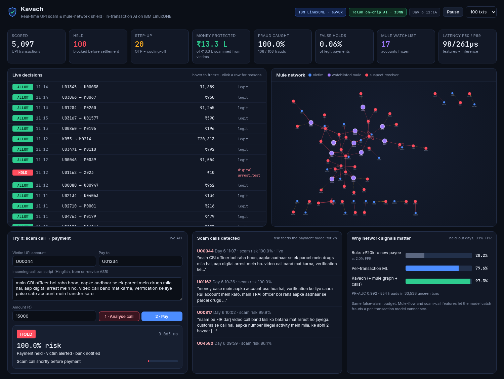

Stops UPI scams inside the transaction — by watching the payment, the money flow, and the scam call together.
Built and run on IBM LinuxONE (z17) · IBM Snap ML · Telum on-chip AI accelerator via zDNN
lost by Indians to cyber fraud in 2024 — a 206% jump over 2023.¹
lost to "digital arrest" scams in just the first 9 months of 2024.²
Layer-1 mule accounts already reported to the national Suspect Registry.¹
A victim on a fake "CBI" video call sends ₹50,000 over UPI. The receiving mule forwards it to the next account within minutes, then cashes out. By the time anyone reports it, the money is gone.
"Amount > ₹20k to a new payee" catches only 28% of scams while blocking 2% of honest payments — and scammers simply split amounts.
Sees one payment at a time. It cannot see that the receiver collected from 9 strangers today, or that the sender just got off a scam call.
Batch analytics and complaint portals act after settlement. Recovery after layering through mule chains is rare.
Stopping scams needs more context and a decision before money settles — on every payment, not a sample.
Amount vs. the sender's habits, first payment to this person, new device, odd hour, bursts of payments.
Mule graph features: receiver fan-in from first-time payers, pass-through (money out minutes after money in). Repeat receivers go on a mule watchlist: payments into them are held, their own outflows need verification.
Hinglish call-transcript classifier spots "digital arrest", fake KYC, screen-share scripts. Risk attaches to the user for 2 hours.
Every flag comes with plain-language reasons, e.g. "Scam call shortly before payment · Receiver collecting from many senders".
One code path: the same streaming feature code builds training data and scores live payments, strictly from past events — no leakage, no training/serving skew. FastAPI + WebSocket dashboard; REST API for calls and payments.
With IBM zDNN, Snap ML compiles our trees to run on the Telum AI accelerator (NNPA) on the same chip as the payment workload — no network hop to an AI server. Verified on z17: identical decisions to the CPU path.
Trained, tested (14/14) and served on a LinuxONE Community Cloud VM on an IBM z17 (s390x). One setup script; the same model file runs on CPU elsewhere.
Payment and call data stay on Z with pervasive encryption. No external AI APIs, no data copies to a GPU cloud.
UPI does billions of payments a month with spikes at salary day and festivals. In-transaction AI must keep up with the core system itself — Z's throughput and uptime are made for this.
PR-AUC on 33,538 unseen payments (554 frauds), trained on LinuxONE
p50 per payment on z17 (features + model + decision); 49 µs on the Telum accelerator, same decisions
of fraud payments stopped in the LinuxONE replay, holding only 0.046% of legit payments

Real UPI data with mule labels is not public, so we simulate a reproducible UPI world: 5,000 users, merchants, kirana shops, 90 mules + 25 cash-out accounts, 7 days, ~117k payments, ~14k calls.
Scams: digital arrest, fake KYC, account takeover, ₹1 "test" payments, repeat victims, multi-hop layering.
Friends pooling trip money then paying an agent minutes later · legit big first-time payments · phone changes · night owls · real bank fraud-alert calls · older mule accounts · scam calls seen for only 55% of victims.
Limits: call classifier trained on template Hinglish; watchlist rule is simple. Everything is reproducible with one command.
If scoring ever breaks, the payment is stepped up for verification, never silently allowed.
The model file's SHA-256 is pinned at training time and checked at start-up. No pickle anywhere.
Every decision is logged with time, reasons and model version, ready for regulator and dispute review.
API key with constant-time check, strict input schemas, per-IP rate limits, no CORS, docs off.
Strict CSP, no inline scripts, SRI on CDN code, escaped output, anti-framing headers.
An attacker pushing dirty money into an innocent account cannot freeze it: the watchlist needs 2+ senders, expires, and only adds an OTP.
14 automated tests incl. auth, headers, rate limits, model tampering and abuse cases · pip-audit: 0 known vulnerabilities · server bound to localhost, viewed via SSH tunnel.
Kavach — the shield sits inside the payment, not after it.